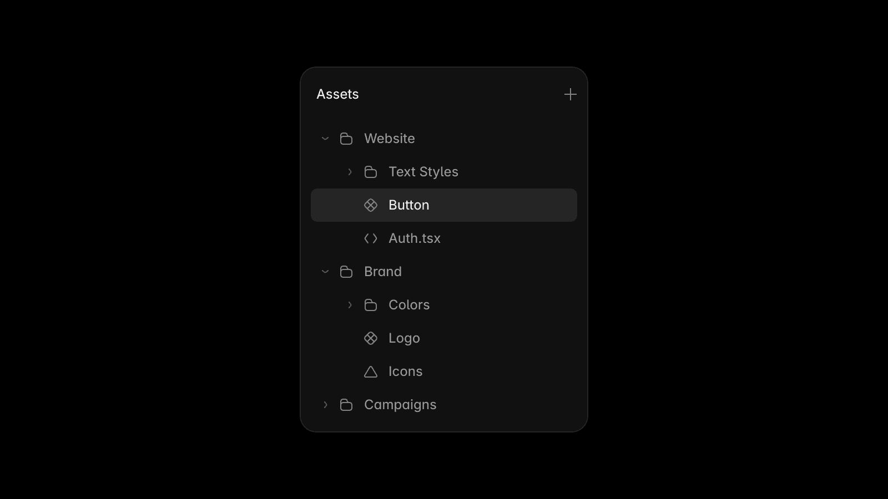
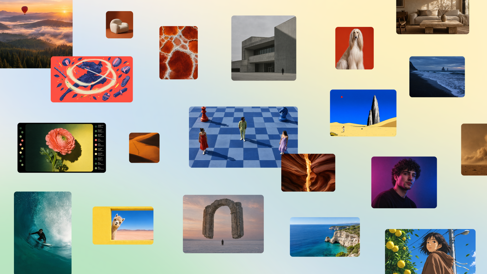
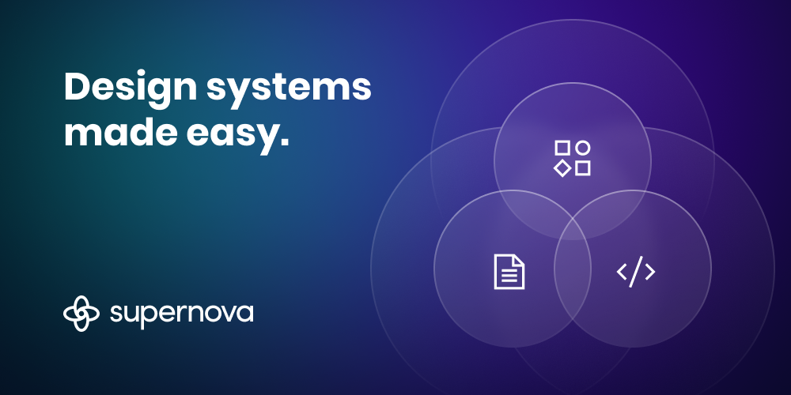
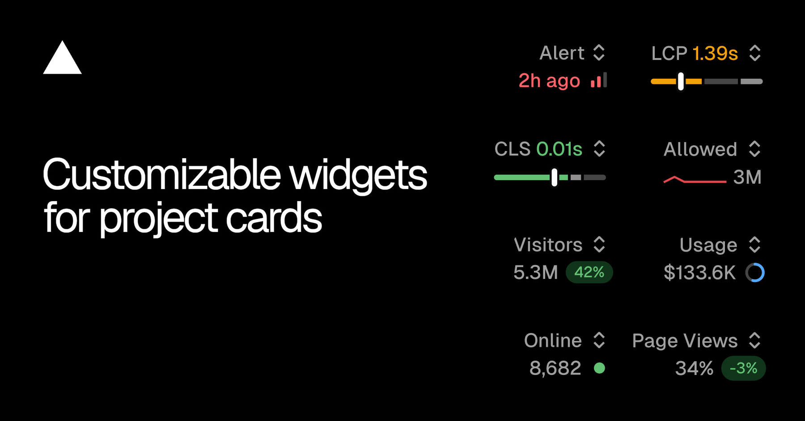
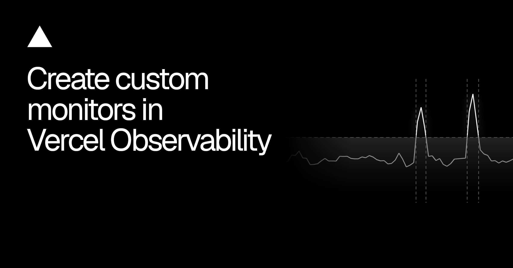

今天几条更新看着很散，实际上都在补同一件事：让 agent 不只会“生成”，还知道资产放哪、额度怎么算、系统现在什么状态。
Figma 把 Weave 模型接进 MCP，Framer 允许 agent 整理资产，Supernova 和 Vercel 则把设计系统与运行指标搬到首页。画布继续变聪明不稀奇，真正有用的是这些入口终于开始认账——认 credits、认权限，也认上线后的数据。
Figma 10 月 26 日的更新把 Weave 里的图像和视频模型接进了 Figma MCP。Seedance、Kling、Nano Banana 这类模型可以从外部 agent 调用，但前提是连接 Weave 账户，消耗的也是 Weave credits。
这不是“Figma 里又多一个生成按钮”，而是把画布外的 agent 接到同一份生成额度和资产上下文里。额度归谁、成片回哪、失败是否扣费，接下来都得写进团队的工作流。还没实测，先不替它保证回流资产的命名和版本关系。

Framer 把 Components、Colors、Text Styles、Code Overrides 和 Vectors 从固定分区里放出来，现在可以混着收进自己的文件夹。Framer Agents 也拿到了整理和管理这些资产的入口。
这个改动很小，但比“AI 自动做网站”更接近真实项目。资产面板一旦不再按类型硬切，团队就能按页面、品牌或交付阶段组织；代价是命名和移动规则必须先定，不然 agent 只会把乱七八糟整理成另一种乱七八糟。

Canva 发布了自己的图像基础模型 Craft，支持任意宽高比的 2K 输出、30 多种比例和 55 种语言。Canva 说它会先规划构图再渲染，公开 API 已上线，Canva MCP 还在路上；目前向全球用户开放。
官方把自家研究排名写得很高，那个先当厂商说法看。更现实的信号是：Canva 不想只做模型集市，它要控制“提示词—构图—可编辑资产”这条链。等 MCP 真开放后，再看它交回来的到底是扁平图，还是能继续拆的设计对象。

Supernova 重做了 Overview：首页现在能看到文档、MCP 读写量、已连接的设计系统数据、同步状态和 pipelines，还能直接从这里启动 Agent。
设计系统后台最怕首页只剩欢迎语和三个大按钮。读写次数、同步状态、流水线结果摆在一起，才像一个有人值班的系统。唯一欠缺的是“这次写入改了什么”——用量能告诉你 agent 很忙，不能告诉你它有没有把系统弄坏。

Vercel 的项目卡片现在可以各自选择指标：Firewall 放行 / 拒绝、Observability 告警、Edge / Function / Error、Speed Insights 的 RES / LCP / CLS，或 Web Analytics 的访客和 page views。选择会跟着项目跨设备保存，没启用的能力也能从卡片里直接开。
仪表盘终于不用所有项目长成一张脸。营销站看访客，交易链路看错误，重交互页面盯 LCP / CLS——项目卡片本身就能说明“这东西上线后最怕什么”。

Vercel 自定义监控可以盯单个指标、比率、异常或固定阈值，也支持时间窗、筛选和分组；JSON 与 vercel monitors add 都能创建。通知可走邮件、Slack、Inbox、push 和 webhook。功能面向开启 Observability Plus 的 Pro / Enterprise，扫描价格写明是每 GB 0.0035 美元。
同一天上线的 Vercel Agent 还会在告警发出前回查日志和指标；每个 billing cycle 含 10 次调查，超出另计费。这个组合很实用，也很容易花冤枉钱：先挑两条真正会叫醒人的路径试，别把每个红点都升级成一场 AI 调查。
Rive 这轮 Runtime 更新把 React Native 0.5 推到 GA，Apple ARM64 runtime 从 6.18 MiB 降到 4.60 MiB，Android stripped ARM64 从 6.17 MB 降到 5.19 MB；Web 端也补了 focus、文字和键盘输入的基础能力。
动效工具的“能播”只是第一关。包体、输入、焦点和跨端行为开始一起补，Rive 才更像可进产品主流程的 UI runtime，而不是 hero 区里那段昂贵动画。数字来自官方公告，还没拿真实项目比安装包，先不把压缩幅度直接算成业务收益。
视频：官方原片https://www.youtube.com/watch?v=Mmw-PpWhKFg｜制作花絮https://www.youtube.com/watch?v=0VVpF3Ctmm8
K/DA 隔了八年回归，Fortiche 这次把人物身份、编舞和长镜头绑得很紧。Stash 列出的导演是 Marietta Ren，分镜由 Benjamin Warnitz 与 Joséphine Meis 完成，舞蹈是 Sean Bankhead；制作花絮专门讲了角色身份、专业编舞、长镜头、灯光与 VFX 节奏。
片子没有靠不停切景撑热闹，而是让动作接管镜头：人物走位决定画面重心，灯光和特效跟着节拍把空间重新分层。做产品 hero video 可以偷这一招——先让交互状态和镜头路径连续，再加粒子和转场；否则就是五秒一个新宇宙，信息一条没记住。还没逐帧拉片，今天先把完整制作方法收进来，不硬夸某个镜头的技术细节。
position-area、Atelier UI、GitHub usage metrics、Ontario / DWP Design System。核验说明：Figma、Framer、Canva、Supernova、Vercel、Rive 与 Stash 官方页面于 2026-10-27 回读。嵌入图片已下载检查，原始宽度为 1000–2560px；视频静态图只用于 Markdown 与公众号 HTML，飞书视频小节改用 Preview View，不重复插封面。